Fire Cooking
Cooking in hot areas
Information
What is here?
The tables below show the dish / meal, the amount of hearts it heals, and its in-game description.
How to make:
Fire-cooked food can be created by placing / dropping ingredients for a short time in the Death Mountain region of Hyrule, placing / dropping ingredients on a campfire, animals dropping their meat on the ground after being killed in the Death Mountain region, attacking an ingredient with a fiery weapon / arrow, or attacking with a fiery weapon / arrow while hunting.
Letting food cook or be on fire for to long after it has been cooked will destroy it.
Hearts:
All fire-cooked food heals 1.5x its base amount. So raw meat that heals 1 heart, will heal for 1.5 hearts when cooked on the fire.
Duration / Buffs:
Fire-cooked food gives no buffs.
Stacking:
Fire-cooked food can be stacked to reserve inventory space. For example, if you cook 5 Raw Meat into 5 Seared Steaks, it will only take up one inventory slot.
The tables below show the dish / meal, the amount of hearts it heals, and its in-game description.
How to make:
Fire-cooked food can be created by placing / dropping ingredients for a short time in the Death Mountain region of Hyrule, placing / dropping ingredients on a campfire, animals dropping their meat on the ground after being killed in the Death Mountain region, attacking an ingredient with a fiery weapon / arrow, or attacking with a fiery weapon / arrow while hunting.
Letting food cook or be on fire for to long after it has been cooked will destroy it.
Hearts:
All fire-cooked food heals 1.5x its base amount. So raw meat that heals 1 heart, will heal for 1.5 hearts when cooked on the fire.
Duration / Buffs:
Fire-cooked food gives no buffs.
Stacking:
Fire-cooked food can be stacked to reserve inventory space. For example, if you cook 5 Raw Meat into 5 Seared Steaks, it will only take up one inventory slot.
Meat
Cooking meat by placing it on the ground in hot areas
Cooking meat by placing it on the ground in hot areas
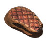
Seared Steak
Seared Steak
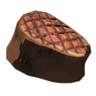
Seared Prime Steak
Seared Prime Steak
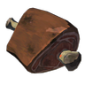
Seared Gourmet Steak
Seared Gourmet Steak
Raw meat cooked over an open flame. Cooking it has increased its flavor and the number of hearts it provides.
Raw prime meat cooked over an open flame. The outside is perfectly browned, while the inside is mouth-wateringly juicy.
The highest quality raw gourmet meat, just kissed by an open flame. No additional seasonings have been added, which lets the natural flavor of the meat really shine.
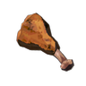
Roasted Bird Drumstick
Roasted Bird Drumstick
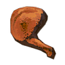
Roasted Bird Thigh
Roasted Bird Thigh
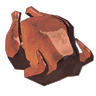
Roasted Whole Bird
Roasted Whole Bird
Raw bird drumstick that's been cooked to a crisp, skin and all. It's devoid of seasoning, but it has a simple, accessible taste. Restores more hearts than the raw variety.
Prime meat that's been flame-seared to perfection. The outide is crispy, but the inside is juicy. Eat it to recover hearts.
This raw whole bird has been tickled by an open flame to bring out its flavor. Less is more, as the lack of additional seasoning allows its natural taste to shine.
Fish
Cooking fish by placing it on the ground in hot areas
Cooking fish by placing it on the ground in hot areas
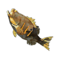
Roasted Bass
Roasted Bass
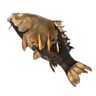
Roasted Carp
Roasted Carp
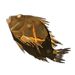
Roasted Porgy
Roasted Porgy
A bass that's been cooked whole over an open flame. It's flaky and savory smelling. Offers more hearts than the raw version.
Roasting this freshwater carp helped to supress some of its stench, making it easier to stomach. You can really sink your teeth into the thick, meaty flesh.
The soft and fluffy texture of this seafaring fish has been enhanced by roasting it over an open fire. The crisp, aromatic skin is particularly delicious.
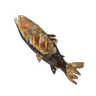
Roasted Trout
Roasted Trout
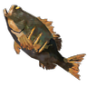
Roasted Hearty Bass
Roasted Hearty Bass
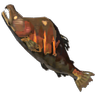
Roasted Hearty Salmon
Roasted Hearty Salmon
This trout can be found all over Hyrule. Served river-to-table, it's simply cooked for a soft and flaky flesh with a mild flavor.
An open flame has crisped the skin of this hearty bass to perfection. It's a sizable portion and contains just the right amount of fat to create an exceptionally tasty dish.
A fresh hearty salmon raosted simply over an open flame without any additional flavoring. Not Only is the skin edible, but it gives off a rather nice aroma as well.
Seafood
Cooking seafood by placing it on the ground in hot areas
Cooking seafood by placing it on the ground in hot areas
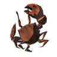
Blacked Crab
Blacked Crab
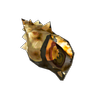
Sneakyshell Escargot
Sneakyshell Escargot
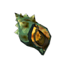
Blueshell Escargot
Blueshell Escargot
A whole crab slow-roasted in its shell. The soft, flaky flesh pairs nicely with the scent of the charred shell for a meal that assaults all five of your senses in all the best ways.
Sneaky river snail roasted whole in its shell. The meat is soft and a little chewy. Pulling all the meat from the shell in one go fills you with a sense of accomplish- ment.
The shell of this hearty blueshell snail acted as a tiny slow cooker as it was roasted. Some people love the trademark bitterness of its tail meat.
Nuts
Cooking nuts by placing them on the ground in hot areas
Cooking nuts by placing them on the ground in hot areas
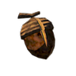
Roasted Acorn
Roasted Acorn
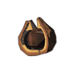
Roasted Tree Nut
Roasted Tree Nut
An acorn cooked with direct heat. Its nutty aroma has been amplified.
A tree seed roasted to amplify its fragrance. Gives more hearts that the raw variety.
Mushrooms
Cooking mushrooms by placing them on the ground in hot areas
Cooking mushrooms by placing them on the ground in hot areas
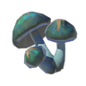
Toasty Chillshroom
Toasty Chillshroom
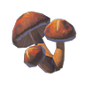
Toasty Sunshroom
Toasty Sunshroom
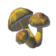
Toasty Zapshroom
Toasty Zapshroom
A fully roasted chillshroom. It's evenly toasted and tastes a low better than when eaten raw. Eating it will restore a bit of health.
It's always a good idea to keep a fully roasted sunshroom or two on hand just in case. Eat it to recover a bit of health.
It's not very shocking that this fully roasted zapshroom is delicious. Eat it to recover a bit of health.
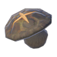
Toasty Ironshroom
Toasty Ironshroom
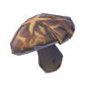
Toasty Razorshroom
Toasty Razorshroom
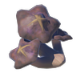
Toasty Rushroom
Toasty Rushroom
An ironshroom exposed to an open flame. Its once-tough exterior is now crunchy and tasty. Restores a bit of health.
A razorshroom that's been exposed to direct heat. Its sharp exterior has softened considerably. Restores a bit of health.
A rushroom that's been put to the torch. It may have lost its speedy properties, but at least it tastes good now.
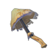
Toasty Silent Shroom
Toasty Silent Shroom
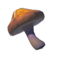
Toasty Endura Shroom
Toasty Endura Shroom
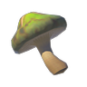
Toasty Stamella Shroom
Toasty Stamella Shroom
A whole, toasted silent shroom. High heat may have destroyed its soft glow, but it's now fragrant and tasty.
A toasted endura shroom. It doesn't grant any special effects, but boy is it tasty!
This toasted Stamella Shroom doesn't grant any special effects, but it will restore one and a half hearts.
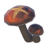
Hylian Shroom
Hylian Shroom
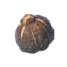
Toasted Hearty Truffle
Toasted Hearty Truffle
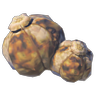
Toasted Big Hearty Truffle
Toasted Big Hearty Truffle
A Hylian Shroom toasted to perfection. The taste and fragrance are amplified, restoring more health to its consumer.
A hearty truffle with a toasted, crispy outside and warm, gooey inside.
This big hearty truffle has been roasted whole. It gets full points for aroma and nutrition. Eat it to recover a lot of hearts.
Fruits
Cooking fruits by placing them on the ground in hot areas
Cooking fruits by placing them on the ground in hot areas
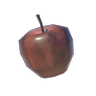
Baked Apple
Baked Apple
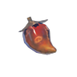
Charred Pepper
Charred Pepper
Roasted Voltfruit
Direct heat has softened and sweetened this apple. Eat it to restore three quarters of a heart.
A pepper that's been gently caressed by an open flame. It's much less spicy now.
This voltfruit from the Gerudo Desert has been charred to really bring out its sweet and sour flavors.
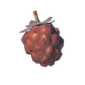
Roasted Wildberry
Roasted Wildberry
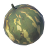
Roased Hyrdomelon
Roased Hyrdomelon
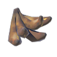
Roasted Mighty Bananas
Roasted Mighty Bananas
This wildberry was prepared over an open flame to alter its sweet taste. It recovers more health than if eaten raw.
This hydromelon was roasted whole for a very soft and flaky inner flesh with a rather intriguing flavor. Now this is your money melon!
These mighty bananas have been roasted whole. Cooking them through has turned the fruit into a sticky, rich, aromatic syrup.
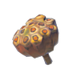
Roasted Lotus Seeds
Roasted Lotus Seeds
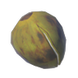
Baked Palm Fruit
Baked Palm Fruit
Roasted Hearty Durian
Flame-roasted fleet-lotus seeds. Peel the skin back to get to the soft and flaky center.
This palm fruit was broiled with direct heat, resulting in steamed flesh inside the rind. Best served at the moment the juices emerge while roasting.
This hearty durian was roasted whole inside its hard shell. Unfortunately, roasting it did nothing to remove its distinct odor. Eat it to recover a lot of hearts.
Vegetables
Cooking vegetables by placing them on the ground in hot areas
Cooking vegetables by placing them on the ground in hot areas
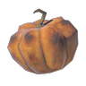
Baked Fortified Pumpkin
Baked Fortified Pumpkin
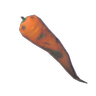
Roasted Swift Carrot
Roasted Swift Carrot
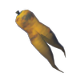
Roasted Endura Carrot
Roasted Endura Carrot
This fortified pumpkin has been roasted whole. The hard rind serves as a container for the steamed pumpkin flesh inside.
A fragrant swift carrot that's been lightly roasted. It doesn't have any special effects, but it will restore some health.
This flame-kissed endura carrot makes for a truly extravagant single-item dish. The fire really brought out its sweetness.
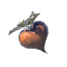
Roasted Radish
Roasted Radish
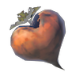
Roasted Big Radish
Roasted Big Radish
A roasted hearty radish. Fragrant and warm, it has no special effect but will restore hearts.
A roasted big hearty radish. To take such a precious vegetable and put it to the fire is decadent in a way.
Herbs and Flowers
Cooking herbs and flowers by placing them on the ground in hot areas
Cooking herbs and flowers by placing them on the ground in hot areas
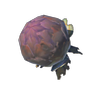
Roasted Armoranth
Roasted Armoranth
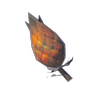
Roasted Mighty Thistle
Roasted Mighty Thistle
Simple, roasted armoranth. The heat has frayed the hard, chewy fiber just enough to make it easy to eat.
Lightly toasted mighty thistle. It has no special effects, but now that it's been grilled, the pointy ends go down smooth.
Eggs
Cooking eggs by placing them on the ground in hot areas or boiling them in a hot spring
Cooking eggs by placing them on the ground in hot areas or boiling them in a hot spring
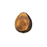
Campfire Egg
Campfire Egg
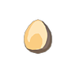
Hard-Boiled Egg
Hard-Boiled Egg
Roasting a bird egg whole in its shell like this helps retain water, making the egg a bit chewier than usual.
A bird egg boiled using water from naturally occurring hot springs. It's popular among children and is easy to make.